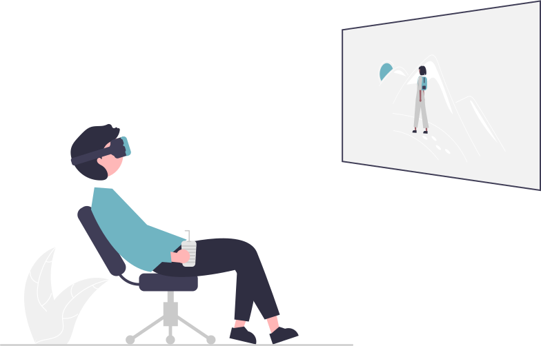
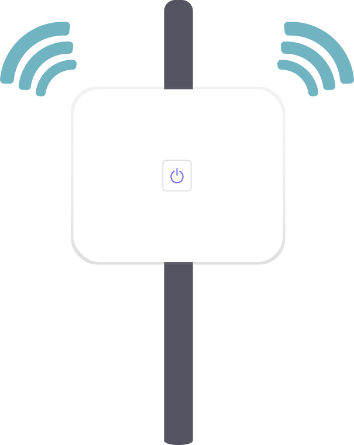
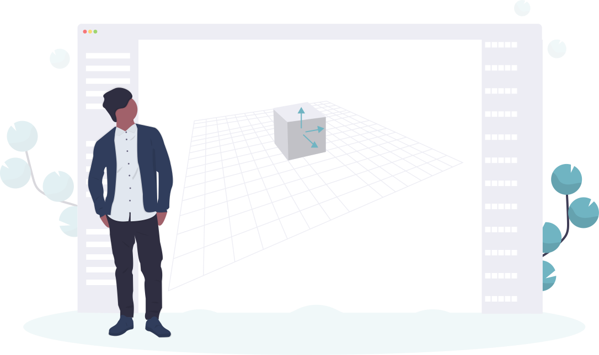
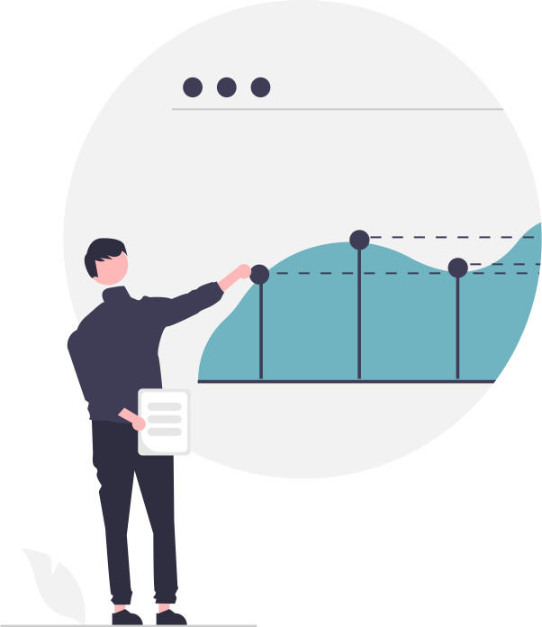

Realidad virtual
Consiste en la inmersión sensorial en un nuevo mundo, basado en
entornos reales o no, que ha sido generado de forma artificial, y
que podemos percibir gracias a unas gafas de realidad virtual y sus
accesorios (cascos de audio, guantes, etc…). El objetivo de
esta tecnología es crear un mundo ficticio del que puedes formar
parte e incluso ser el protagonista.
Ciberseguridad
Es la práctica de proteger sistemas, redes y programas de ataques
digitales. Por lo general, estos ciberataques apuntan a acceder,
modificar o destruir la información confidencial; Extorsionar a los
usuarios o los usuarios o interrumpir la continuidad del negocio.
Actualmente, la implementación de medidas de seguridad digital se
debe a que hay más dispositivos conectados que personas, y los
atacantes son cada vez más creativos.
Realidad aumentada
Asigna la interacción entre ambientes virtuales y el mundo físico,
posibilitando que ambos se entremezclen a través de un dispositivo
tecnológico como computadores, teléfonos móviles, tabletas, entre
otros. Insiere objetos virtuales en el contexto físico y se los
muestra al usuario usando la interfaz del ambiente real con el apoyo
de la tecnología.

Internet de las cosas (IoT)
Es el proceso que permite conectar elementos físicos cotidianos al
Internet: desde objetos domésticos comunes, como las bombillas de
luz, hasta recursos para la atención de la salud, como los
dispositivos médicos; también abarca prendas y accesorios personales
inteligentes e incluso los sistemas de las ciudades inteligentes.
Esto se puede realizar por medios fisicos
(celulares, controles, computadores) que reciben y
transfieren datos a traves de redes inhalambricas
(WI-FI, Bluetooth).
Cloud computing
Consiste en el suministro de recursos informáticos a petición, desde
aplicaciones hasta centros de datos, a través de Internet y con un
modelo de pago según uso. Es una tecnología que deja acceso a
software, almacenaje de ficheros y procesamiento de datos a través
de Internet, siendo una opción alternativa a la ejecución in situ en
la computador
Inteligencia artificial (IA)
Es el intento de crear máquinas que presenten/imiten las
capacidades, pensamientos e inteligencias que el ser humano. Una
tecnología que todavía nos resulta lejana y misteriosa, pero que
desde hace unos años está presente en nuestro día a día a todas
horas.
Big Data
Se refiere a los datos que son tan grandes, rápidos o complejos que
es difícil o imposible procesarlos con los métodos tradicionales. El
acto de acceder y almacenar grandes cantidades de información para
la analítica ha existido desde hace mucho tiempo.

Fabricación aditiva (Impresión 3D)
Es un proceso basado en la simple idea de convertir un modelo
digital en un objeto tridimensional sólido. Con los años, varias
tecnologías de impresión 3D se han desarrollado en la industria con
la característica común de crear un modelo físico capa por capa.
Biología sintética (SynBio)
Es una biotecnología que ofrece un mundo de posibilidades, como
adapatacion de cultivos/semillas para que resistan muchos mejor los
climas variados, las plagas, y algunos factores ecternos; el
desarrollo de organos aptos para transplantes, manipulación genética
para "eliminar" genes "contaminados"
(como enfermedades genéticas), entre otros. Debido a que es
un terreno inexplorado que involucra vidas humanas, se han
establicido muchas restricciones a la hora de ejecutar cualquier
experimento.

Sistema de gestión de procesos de negocio (BPMS)
Es una metodología de trabajo utilizada por muchas empresas en la
actualidad. Es un sistema de gestión de procesos se encarga de
controlar el modelado, visibilidad y gestión de los procesos
productivos de la empresa. BMP implica adoptar una serie de pasos o
acciones que modifican la forma de trabajar de la empresa con el
objetivo de mejorar los procesos y facilitar la colaboración con un
enfoque hacia el cliente.
Robot colaborativo
Son robots cuya función y creacion es por/para trabajar en conjunto
con un humano. Comunmente, el robot cumple con tareas de fuerza,
presición y resistencia, mientras el humano aporta destreza,
flexibilidad y resolución de problemas. Estos robots se caracterizan
por ser ligeros, flexibles y fáciles de instalar. Están diseñados
especialmente para interactuar con humanos en un espacio de trabajo
compartido sin necesidad de instalar vallas de seguridad.